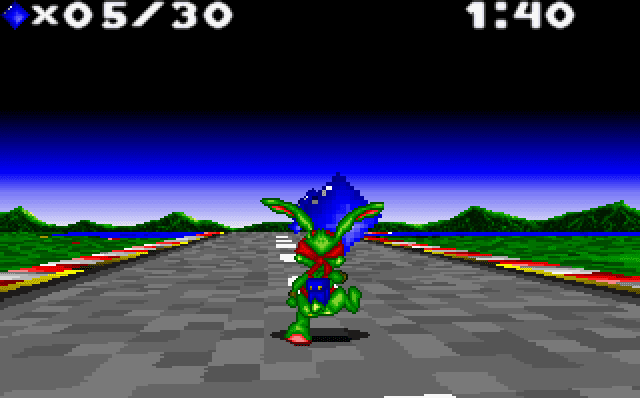

Mode 7


Description
Back in the old days rendering 3D worlds was hard. Computers did not have the resources required to perform a lot of calculations at reasonable speeds. The consoles of that era had even harder restrictions. Developers had to come up with clever techniques to render something that resembles 3D even though it barely used any of the math involved for true 3D rendering.The old SNES(Super Nintendo Entertainment System) implemented a graphics mode known as "Mode 7". It was mode 7 from the 0-7 modes available..

Note the 3D-esque ground in both screens, but all the other sprites are regular flat images.
I did not own a console back then, but I did play extensively on my PC. I had MS-DOS, and there I played loads of Jazz Jackrabbit and it used the same pseudo 3D technique in their secret levels.

I made a little program that replicates the effect. Perhaps I'll make some games with it in the future.